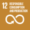

BE17: Product Harm
Products do not harm people or the environment
1. Ambition
A Future-Fit Business ensures all of the goods and services it offers are completely benign to people and nature, both as a result of their use and (in the case of physical goods) at their end of life.
1.1 What this goal means
Although many goods and services could be used in ways that harm people or the environment, the focus here is on three areas: those which are intended to cause harm; those whose use could reasonably be expected to result in harm; and those which instill or reinforce behaviours that undermine society’s progress to future-fitness.
A Future-Fit company ensures that any goods and services it provides, when used as intended, do not lead to environmental degradation, ecosystem disruption, or negative impacts on people’s physical and mental wellbeing.
With respect to physical goods, this goal encompasses sold and leased goods, as well as any other items provided to others in support of commercial activities, but which the company does not consider to be revenue-generating. It covers both final end-user products, and intermediate goods which are incorporated or processed into final products by other companies.
To be Future-Fit, a company must ensure that the goods and services it provides to others are not likely to cause harm to people or the environment through their use and (in the case of physical goods) at their end of life.
1.2 Why this goal is needed
As with all Future-Fit Break-Even Goals, a company must reach this goal to ensure that it is doing nothing to undermine society’s progress toward an environmentally restorative, socially just, and economically inclusive future. To find out more about how these goals were derived based on 30+ years of systems science, see the Methodology Guide.
These statistics help to illustrate why it is critical for all companies to reach this goal:
- We are continuously introducing novel substances into circulation. An estimated 2,000 chemicals are introduced every year for use in everyday items including food, personal care products and prescription drugs. The effects of many of these chemicals remain unknown. [123]
- A large number of substances are being used that may soon be subject to restrictions. At the time of publishing, there are more than 1,100 companies in the EU and USA which produce or import hazardous chemicals that are likely to be banned or restricted soon. [124]
1.3 How this goal contributes to the SDGs
The UN Sustainable Development Goals (SDGs) are a collective response to the world’s greatest systemic challenges, so they are naturally interconnected. Any given action may impact some SDGs directly, and others via knock-on effects. A Future-Fit Business can be sure that it is helping – and in no way hindering – progress towards the SDGs.
Companies may contribute to several SDGs by ensuring its products cause no harm, and actively encouraging their suppliers to do the same. But the most direct links with respect to this goal are:
| Link to this Break-Even Goal | |
|---|---|
 |
Support efforts to promote mental health and wellbeing, and efforts to substantially reduce the number of deaths and illnesses from hazardous chemicals and air, water and soil pollution. |
 |
Support efforts to improve water quality by reducing pollution, eliminating dumping and minimizing the release of hazardous chemicals and materials, and to protect water-related ecosystems. |
 |
Support efforts to reduce the adverse per capita environmental impact of cities. |
 |
Support efforts to achieve the environmentally sound management of chemicals and all wastes throughout their life cycle, and significantly reduce their release to air, water and soil. |
 |
Support efforts to prevent and significantly reduce marine pollution of all kinds, in particular from land-based activities, and efforts to protect marine and coastal ecosystems. |
2. Action
2.1 Getting started
Background information
This goal relates to both goods and services. Some services may cause harm –inadvertently or otherwise – for example by undermining people’s physical or mental wellbeing through prolonged use, or by instilling or reinforcing behaviours that undermine society’s progress to future-fitness.
When it comes to physical goods, a wide range of products which at first glance appear harmless can cause significant harm due to the ways they are used and the substances they contain. Many physical goods are made up of a complex mixture of chemical substances, which may go through multiple stages of interim processing before ending up in the hands of the final user. Even if a company that manufactures goods knows every intentionally added substance contained within them, it might still struggle to evaluate whether these substances are dangerous or benign. A lack of supply chain transparency and gaps in our understanding of chemical hazards pose major systemic challenges. As a result, progress toward this goal will likely require sustained effort by the company and its partners.
A company’s first step toward future-fitness should be to examine the services it offers, and the modes of use and composition of any goods it provides. Having this data in hand will allow the business to pursue opportunities for improvement, through product and/or business model innovation, as well as collaboration with others across the value web.
Questions to ask
These questions should help you identify what information to gather.
Does the company’s commercial activity result in goods changing hands?
- Does the company sell physical goods? What packaging is used to transport, protect and display these products?
- Does the company provide any form of commercial service which results in goods or materials ending up in the hands of customers or other people?
- Are any other physical goods supplied to third parties in support of the company’s core activities, such as point of sale display materials, customer giveaways, or as supplementary services?
How do others interact with goods that the company provides?
- Could people be exposed to potentially harmful substances as a result of such use (e.g. through contact with the skin, ingestion, inhalation)?
- Could potentially harmful substances be emitted into air, land or water as a result of the use of such goods?
- Might such harm be caused if goods are misused in predictable ways (e.g. infants interacting with household products)?
What is the composition of company-provided goods?
- What materials and/or components are used as inputs to create these physical goods? Do they contain multiple substances? If so, are those substances tracked by the company?
- Does the company or its suppliers use chemicals that are identified as hazardous? Are any of the substances used subject to market regulations, or disclosure requirements? Have any substances been flagged as potentially problematic by one or more industry authorities?
- How far back up the supply chain can the company confidently trace the inputs to its products? Does this visibility extend all the way back to the harvesting or extraction of raw materials? Are there any crucial gaps in the company’s knowledge?
Does the company provide services which are likely to cause harm?
- Does the company offer services which increase human activity in or around natural ecosystems (e.g. tourism excursions into vulnerable habitats)?
- Could the company’s services negatively impact people’s physical and mental wellbeing, for example by reinforcing addictive behaviours (e.g. gambling services) or by failing to protect privacy (e.g. social media platforms with insufficient data controls)?
- Does the company perform or deliver services that are intended or likely to influence people’s behaviour (e.g. news media)? Could that influence be reasonably expected to instill or reinforce behaviours that might undermine society’s pursuit of future-fitness?
- Could the company’s services perpetuate or expand reliance on infrastructure which effectively locks in negative impacts (e.g. searching for new thermal coal reserves)?
How to prioritize
These questions should help you identify and prioritize actions for improvement.
What are the best opportunities for making progress?
- Which of the company’s goods or services are most likely to cause harm to users or their surroundings? Which are most likely to negatively impact the environment?
- Which of the company’s goods or services are most vulnerable to changes in regulation (e.g. substances that may be banned), or to negative coverage by consumer advocacy groups?
- If the company relies on any materials that are harmful or potentially harmful, which of these are used or purchased in the highest quantities? Do any such materials have benign or less harmful alternatives? Would a substitution present an opportunity to differentiate in the market? What are the likely trade-offs?
Does the company have targets in place to reduce the concentration or presence of harmful components or product characteristics?
- Has the company made public commitments or set internal targets to significantly reduce or eliminate the harmful properties of the goods and services it provides? If so, are the related action plans sufficient to achieve future-fitness over time?
- If the company hasn’t set targets yet, how might they be put in place? Whose authorization would be needed, and who would need to be involved to design and implement adequate procedures and incentives to ensure their successful adoption?
- If current action plans are not likely to get the company to future-fitness, how can they be supplemented or adjusted?
Could the company find ways to exceed the requirements of this goal?
- Beyond what is required to reach this goal, is the company able to offer products that serve to speed up society’s progress to future-fitness?156 For further details see the Positive Pursuit Guide.
The next section describes the fitness criteria needed to tell whether a specific action will result in progress toward future-fitness.
2.2 Pursuing future-fitness
Introduction
To be Future-Fit, a company must ensure that the goods and services it provides to others are not likely to cause harm to people or the environment through their use and (in the case of physical goods) at their end of life.
Guidance on what needs to be assessed
Progress is weighted by revenue (for sold or leased goods and services) and by cost for supplementary goods:
Sold or leased goods and services
This category encompasses all goods and services offered to customers in exchange for revenue.
Supplementary goods
This category encompasses any items provided to others in support of commercial activities, but which the company does not consider to be revenue-generating, including:
- Packaging that ends up in the hands of customers (e.g. boxes, carrier bags).
- Marketing materials and giveaways, including items offered with the purchase of a product (e.g. toys with children’s meals).
- Goods the company transfers to other organizations before the products are sold (e.g. point of sale displays provided to third-party retail partners, shipping materials such as pallets and wrapping provided to external transportation partners).
- Any goods or materials used to deliver a service which end up in the hands of customers (e.g. travel tickets, receipts, internet routers).
Categorizing goods
A company may provide some goods which it is unsure whether to designate as revenue-generating or not (e.g. product packaging). Whatever approach is taken, companies are encouraged to apply the same rationale consistently to categorize all physical goods. Once a designation has been made, it should not be changed in future years except in rare cases where doing so would result in the reported data providing more reliable and relevant information.157
Guidance on assessing goods for harmful substances
When it comes to physical goods, a wide range of products which are intended to be benign might inadvertently cause problems if they expose people or the environment to harmful substances embedded within them.
The onus is on the company to determine whether this is the case. In particular, the following questions should be considered:
- Is the use (or any reasonably expected form of misuse) of a good likely to result in any substance coming into contact with a person’s skin, being ingested or being inhaled?
- Is the use (or any reasonably expected form of misuse) of a good likely to result in the emission of any substance into air, land or water?
- At its end of life is what remains of a good likely to result in the emission of any substance into air, land or water?158
If the answer to any of these questions is yes, the company must investigate further.159 For more guidance see the following frequently asked questions: What is a substance of concern? and How should goods be checked for substances of concern?
Fitness criteria
Fitness is assessed differently for final goods, intermediate goods and services, as follows.
Assessing final goods for future-fitness
A final good is one that is ready to be used or consumed by an end user without further processing. Any such goods are assigned a progress score of 100% unless they fall into one of the following categories, in which case they are assigned a score of 0%:
- Goods that are banned from use in one or more markets, due to hazardous characteristics (e.g. chemicals identified as a Substance of Very High Concern and restricted by the EU Commission).
- Weapons designed to kill or permanently maim people (e.g. landmines, bombs, assault rifles).
- Environmentally destructive technologies (e.g. bottom-trawling fishing nets which damage aquatic ecosystems, plastic microbeads which accumulate in waterbodies).
- Goods that are designed for human consumption or ingestion and whose use even at moderate levels is likely to increase long-term health risks (e.g. cigarettes).
- Goods that force the user to pollute the environment (e.g. diesel-powered equipment that emits nitrous oxide, lead or other air pollutants).
- Goods that contain substances of concern which – through the good’s intended use or likely misuse, or at their end of life – can be reasonably expected to undermine people’s health.
- Goods that contain substances of concern which – through the good’s intended use or likely misuse, or at their end of life – can be reasonably expected to be emitted into the environment.160
Assessing intermediate goods for future-fitness
An intermediate good is one that is used by another business as an input to deliver its own goods or services. Typical examples include ingredients (e.g. dyes, flavourings), processed materials (e.g. steel, plastic pellets, paints) or technical parts (e.g. electronic components).
To assess whether an intermediate good is likely to cause harm, the company should first consider all of the fitness criteria for final goods, as specified above. If the good still appears benign, the company must also then do the following:
- Identify the characteristics of a representative user161 of the intermediate good, to understand what purpose it serves to them; and
- Identify whether that purpose is likely to lead to the creation of final goods or services that fall into any of the categories outlined above.
If the company finds that a representative user of the intermediate good is likely to use it to deliver a product which would itself score 0% for this goal, then the company should also score the intermediate good as 0% fit.
Note that many intermediate goods – such as sheet plastics, rubber washers, metal screws, and a wide range of industrial chemicals – can be used in a vast number of ways, many of which are totally benign. Unless the company is serving a specific market niche, there is likely to be no ‘representative user’ for such products, in which case this additional guidance will not apply.
Assessing services for future-fitness
Services are assigned a progress score of 100% unless they fall into one of the following categories, in which case they are assigned a score of 0%:
- Their delivery results in negative impacts similar to those identified for unfit goods.162
- Their delivery could be reasonably expected to cause harm to natural ecosystems, for example due to an increase in human activity in and around them (e.g. tourism excursions into vulnerable habitats with insufficient protection for native species).163
- Their delivery could be reasonably expected to negatively impact people’s physical and mental wellbeing, for example by reinforcing addictive behaviours (e.g. gambling services) or by failing to protect privacy (e.g. social media platforms with insufficient data controls).
- Their delivery is intended or likely to influence people’s behaviour in ways that could be reasonably expected to instill or reinforce behaviours that might undermine society’s pursuit of future-fitness (e.g. news services with a consistent editorial bias against established science, such as the existence of human-caused global warming).
- Their delivery perpetuates or expands reliance on infrastructure which effectively locks in negative impacts (e.g. searching for new thermal coal reserves).
3. Assessment
3.1 Progress indicators
The role of Future-Fit progress indicators is to reflect how far a company is on its journey toward reaching a specific goal. Progress indicators are expressed as simple percentages.
A company should always seek to assess its future-fitness across the full extent of its activities. In some circumstances this may not be possible. In such cases see the section Assessing and reporting with incomplete data in the Implementation Guide.
Assessing progress
This goal has four progress indicators. To calculate them the following steps are required:
- Assess the fitness of each physical good or service, separately for its use phase and (in the case of physical goods) at its end of life.
- For both use phase and end of life, calculate the company’s progress with respect to sold or leased goods and services, and for any supplementary goods.
The resulting four indicators capture company progress as follows:
- Sold or leased goods and services – Use phase
- Sold or leased goods and services – End of life
- Supplementary goods – Use phase
- Supplementary goods – End of life
Assessing the fitness of a good or service
A good or service is 100% fit if it has been assessed and meets the stated fitness criteria. Products that have not yet been assessed, or which do not meet all of the stated fitness criteria are 0% fit.
Calculating company progress
The company’s overall progress towards this goal can now be calculated, for each of the four indicators, as a weighted average:
- For sold or leased goods and services, use the revenue generated as a weighting factor.
- For supplementary goods, use the cost incurred to produce those goods as a weighting factor.
These calculations can be expressed mathematically as:
\[F^G=\frac{\sum_{p=1}^Pf_p*R_p}{\sum_{p=1}^PR_p}\]
Where:
| \[F^G\] | Is the progress toward future-fitness across a category of physical goods (or services), expressed as a percentage. |
| \[f_p\] | Is the fitness of physical good (or service) p. |
| \[R_p\] | Is the total revenue generated by (or cost associated with) p. |
| \[P\] | Is the total number of goods (or services) in the company’s portfolio. |
For an example of how this progress indicator can be calculated, see here.
3.2 Context indicators
The role of the context indicators is to provide stakeholders with the additional information needed to interpret the full extent of a company’s progress.
Total revenue/costs
In addition to the four progress indicators, companies must report the total revenue and cost amounts as follows:
- Total revenue from sold or leased goods and services.
- Total cost of supplementary goods delivered to customers.
The total revenue/costs of each category are equivalent to the summed values of Rp in the equation above, and so no additional data or effort is required to calculate them.
For an example of how context indicators can be reported, see here.
4. Assurance
4.1 What assurance is for and why it matters
Any company pursuing future-fitness will instill more confidence among its key stakeholders (from its CEO and CFO to external investors) if it can demonstrate the quality of its Future-Fit data, and the robustness of the controls which underpin it.
This is particularly important if a company wishes to report publicly on its progress toward future-fitness, as some companies may require independent assurance before public disclosure. By having effective, well-documented controls in place, a company can help independent assurers to quickly understand how the business functions, aiding their ability to provide assurance and/or recommend improvements.
4.2 Recommendations for this goal
The following points highlight areas for attention with regard to this specific goal. Each company and reporting period is unique, so assurance engagements always vary: in any given situation, assurers may seek to evaluate different controls and documented evidence. Users should therefore see these recommendations as an illustrative list of what may be requested, rather than an exhaustive list of what will be required.
- Document the methods used to identify all materials included by the company in the Sold or leased goods and related Supplementary goods categories. Describing how these were identified can help assurers to assess whether the company’s approach runs the risk of failing to identify harmful materials present in the goods it produces.
- Document the methods used to check whether materials used in the company’s products are “substances of concern”. This can demonstrate to assurers that the company has understood the requirements in this Action Guide and that the assessment performed by the company was sufficient.
- Document the methods used to determine and evaluate the end-of-life implications for the company’s products. Describing how these were identified can help assurers to assess whether the company’s approach runs the risk of failing to identify any substances of concern involved in end-of-life processes.164
- Retain references to data sources used to determine the costs and revenues of products. This can help assurers to understand and verify the weighting calculations performed for the company’s progress indicators.
For a more general explanation of how to design and document internal controls, see the section Pursuing future-fitness in a systematic way in the Implementation Guide.
5. Additional information
5.1 Example
ACME Inc. sells three lemonade products. Traditional lemonade in a glass bottle, traditional lemonade in a plastic bottle and sugar-free lemonade in a plastic bottle. Both types of product (traditional and sugar-free) contain water and lemons, but whereas the first contains sugar, the latter contains an artificial sweetener.
ACME Inc. has already worked closely with its lemon and sugar suppliers to make sure each input is free of problematic pesticides. However, it has not yet analyzed the artificial sweetener. It can assess the fitness of each product as:
\[f_{TradPL}=100\%\] \[f_{TradGL}=100\%\] \[f_{SugFree}=0\%\]
The traditional lemonade in a glass bottle brings in $300,000 of revenue, traditional lemonade in a plastic bottle brings in $430,000 and the sugar-free lemonade brings in $300,000. ACME’s fitness for Sold and leased goods and services is therefore:
\[F^{ProdUse}=\frac{\sum_{p=1}^Pf_p*R_p}{\sum_{p=1}^PR_p}=\frac{100\%*(300,000+430,000)+0\%*300,000}{1,030,000}\approx71\%\]
ACME assesses the end of life harm of the different types of bottles. The plastic bottles have labels containing toxic dyes, which if discarded will leach into water and soils. Hence:
\[F^{ProdEoL}=\frac{\sum_{p=1}^Pf_p*R_p}{\sum_{p=1}^PR_p}=\frac{100\%*300,000+0\%*(430,000+300,000)}{1,030,000}\approx29\%\]
Finally, it confirms that pallets, shrink-wrap used to transport packages of its product, and the branded product packaging it uses are the only Supplementary goods they utilize. The pallets are made of wood and are assessed to be Future-Fit both during use and at their end of life, and cost $15,000 total during the reporting period. The shrink-wrap costs $8,500 and is determined not to meet the fitness criteria for use or end of life. The packaging costs $60,000 annually and meets the fitness criteria for use, but not for end of life. The company performs the following calculations:
\[F^{SuppUse}=\frac{\sum_{s=1}^Sf_s*C_s}{\sum_{s=1}^SC_s}=\frac{100\%*(15,000+60,000)+0\%*8,500}{83,500}\approx90\%\]
\[F^{SuppEoL}=\frac{\sum_{s=1}^Sf_s*C_s}{\sum_{s=1}^SC_s}=\frac{100\%*15,000+0\%*(8,500+60,000)}{83,500}\approx18\%\]
It reports the progress and context indicators as shown, below:
Progress indicators
Sold or leased goods and services – Use phase: 71%
Sold or leased goods and services – End of life: 29%
Supplementary goods – Use phase: 90%
Supplementary goods – End of life: 18%
Context indicators
Total revenue from sold or leased goods and services: $1,030,000
Total cost of supplementary goods delivered to customers: $83,500
5.3 Useful links
Clean Production Action
Clean Production Action’s mission is to design and deliver green chemicals and sustainable materials. The group is the creator or co-creator of a range of programs and initiatives that aim to advance safe, green and sustainable materials in production. These include:
- Green Screen® for Safer Chemicals is an open, transparent, and publicly accessible method for chemical hazard assessment to help move our society quickly and effectively toward the use of greener and inherently safer chemicals.
- The Chemical Footprint Project, which tracks, disseminates, and benchmarks corporate progress toward using safer chemicals in products, manufacturing, and supply chains.
- BizNGO, a collaborative initiative involving both companies and environmental groups that works to ensure safer chemicals and sustainable materials in products and production. Its Guide to Safer Chemicals provides detail on the level of granularity required when analysing product composition, and for information on residuals of high concern. [126]
Cradle to Cradle Institute
The Cradle to Cradle Institute administers the publicly available Cradle to Cradle Certified™ Product Standard which provides designers and manufacturers with criteria and requirements for continually improving what products are made of and how they are made. [127]
The International Chemical Secretariat
The International Chemical Secretariat (ChemSec) is a non-profit organization, based in Sweden and founded by four environmental organizations: The Swedish Society for Nature Conservation, WWF Sweden, Nature and Youth, and Friends of the Earth Sweden. ChemSec maintains the following useful resources:
- The SIN (Substitute It Now!) List, a constantly evolving list of harmful substances that should be phased out of all products, regardless of the industry. [65]
- SINimilarity, a free online tool that identifies substances which are structurally similar to SIN List substances. [66]
The Natural Step
The Natural Step is an international not-for-profit organization which pioneered the development and use of the Framework for Strategic Sustainable Development (upon which the Future-Fit Business Benchmark is based). For more than two decades The Natural Step has worked with a wide range of companies, industry bodies and others to understand how substances can cause harm to society and the environment by assessing life cycle management practices against system conditions for a sustainable future. Various tools, guides and case studies are available on its website. [128]
REACH
REACH is a EU chemical regulation concerning the Registration, Evaluation, Authorization and restriction of Chemicals, which defines criteria for classifying products. It exists principally to provide a high level of protection to human health and the environment from the use of chemicals. [129]
The Zero Discharge of Hazardous Chemicals Programme
The ZDHC Programme, led by a group of leading apparel and footwear companies, has created a list of restricted or problematic substances relevant to the footwear and apparel industry. [71] This should serve as credible guidance for any company in that industry, even if that company is not actively involved in ZDHC.
5.2 Frequently asked questions
What is a substance of concern?
For the purposes of this goal, a substance is considered to be a ‘substance of concern’ if one or more of the following is true:
It has properties that make it dangerous to – or capable of having a harmful effect on – human health or the environment.
The substance is designated as harmful by one of the following sources:
- Credible industry bodies relevant to the industry in question, who recommend the phasing out of the substance.165
- Lists of substances which are legally banned in one or more of the company’s areas of operations.166
- Credible peer-reviewed research, which strongly suggests evidence of harm.
- The substance is likely to build up in nature if emitted.167 Categories of substances known to be of concern for this reason include, but are not limited to:
- Human-made synthetics that are novel or foreign to nature [57] (e.g. persistent organic pollutants (POPs) [58] including endocrine disrupting chemicals (EDCs) [59], radioactive materials [60], and nanomaterials/micro-plastics [60]).
- Metals and their compounds that are not naturally abundant in nature (e.g. compounds of heavy metals like mercury, lead, zinc and cadmium). [61]
- Stratospheric ozone-depleting chemical substances. [60]
- Aerosols [60]
- The substance is likely to interact with other substances, as a result of its emission, in ways that cause 1, 2 or 3 to be true.
How should goods be checked for substances of concern?
To identify substances of concern in its goods, a company should undertake the following steps:
- Identify the good’s composition by breaking it down into a list of its homogenous materials.
- Identify the supplier(s) of each homogenous material, and ascertain whether the supplier has intentionally added any substances of concern at a concentration level of at least 1,000 parts per million (or 0.1% by the supplied material’s weight).
- If substances of concern are identified, the company can either:
- Identify the good as unfit; or
- Identify whether the use of each substance is problematic.
Cradle to Cradle certification
Note that these steps are closely aligned with key steps required to attain a basic-level Cradle to Cradle Certified™ product certification. If a product is Cradle to Cradle Certified™ at any level, it can therefore be assumed to be Future-Fit.
Guidance for each of these steps is provided below.
Identify the good’s composition
The good must be characterized in terms of its individual components, and each component described in terms of the homogenous materials from which it is made. At the end of this process, the identified materials should be of uniform composition throughout, such as polypropylene, steel, shampoo, glass cleaner, nylon yarn, glue or paint. [130]
Note that it is possible for this analysis to be conducted for a group of products, in cases where those products all share the same materials in the same concentrations, except for one or more chemical components which can be readily substituted into the product without altering its core composition (e.g. a shampoo that comes in different fragrances).168
Engage with product input suppliers
The next step is to identify the suppliers who produce each homogenous component. Here it may be necessary to work with direct suppliers to identify the relevant sub-suppliers.
Once a supplier has been identified the company must attain a written declaration stating whether the supplier has intentionally added any substances of concern.
When necessary, investigate further
If a substance of concern has been found, the company can either conclude that the good is currently unfit, or it can undertake further analysis to identify whether that substance is acceptable given the particular context within which it is being used. This requires a full assessment, equivalent in scope to the one specified by the Cradle to Cradle Certified™ Material Health Assessment Methodology or the GreenScreen® for Safer Chemicals Hazard Assessment Guidance.
For a substance’s presence to be considered Future-Fit, it must be assigned a score at least equivalent to a “C” on Cradle to Cradle’s Material Health Assessment rating.169
Why is a substance considered harmful if it can build up in the environment?
As our understanding of the effects of chemicals increases, international bodies, NGOs and regulators will continue to identify substances whose use should be eliminated. This is typically due to their inherent characteristics, toxicity classification and resultant effects on people and the environment.
However, harm to the environment cannot always be known in advance. For example, substances such as CFCs were hailed as a modern wonder due to their stable state and long life. It was not understood that CFCs build up in the atmosphere, resulting in the destruction of the ozone layer. Allowing substances to systematically increase in concentration in the environment is fundamentally at odds with system conditions for a sustainable society (see the Methodology Guide and will eventually lead to harm when systemic thresholds are surpassed. [14]
Many of the compounds on the SIN list went through the same stages. They were known to increase in concentration but were allowed to be used until damaging thresholds were exceeded, and correlations were effectively demonstrated. A Future-Fit company should err on the side of caution in such cases.
Is revenue-weighting always appropriate?
Some organizations – such as early-stage companies, some charities, divisions of companies operating as cost-centres, or companies working on pre-production development – may determine that using revenue as a weighting approach to assess progress might paint a misleading picture.
Such cases are likely to be rare, because even companies that do not directly sell goods or services still need to meet their costs, and therefore receive some form of monetary capital or in-kind services and labour. These inputs are directed at operational work-streams, which in turn lead to meeting customer needs, so in many cases it is possible to connect indirect funding (as a proxy for revenue) to appropriate downstream user groups.
When this is not possible, or if it is determined that this technique may mislead stakeholders, companies should consider using cost instead of revenue to determine the completeness of their assessment, and as a method for weighting their progress scores.
Literaturverzeichnis
For information on the eight Properties of a Future-Fit Society which a company’s products may help to deliver, see the Methodology Guide.↩︎
The company should approach the way it sorts goods into these categories in the same manner as it approaches applying an accounting policy. For this reason, the wording used here reflects that used in International Accounting Standard 8.14. [125]↩︎
For goods that may emit harmful substances, progress is calculated separately for the good’s use phase and at its end of life. This is because some types of good are harmless during use, but whatever remains after use (e.g. packaging) may cause harm if it escapes into nature.↩︎
A company may be unsure whether to capture a certain type of substance emission here, or via goal BE05: Operational emissions do not harm people or the environment (e.g. a gardening service which uses potentially harmful pesticides). Where such uncertainties arise, see Differentiating between operational and product impacts in the Implementation Guide.↩︎
For goods that may emit harmful substances, progress is calculated separately for the good’s use phase and post-use phase. This is because some types of good are harmless during use, but may cause harm if they are not responsibly processed at the end of their useful life (e.g. batteries which end up in landfill).↩︎
A ‘representative user’ is a typical business that will purchase or lease an intermediate good, as an input required to deliver its own goods or services. The representative user of a good is not the same as the final end user. Only intermediate goods which fulfil a specific market niche are likely to have a representative user. For example, a company that produces the filters for cigarettes will have a representative user of a cigarette company, given there is no other likely use for a cigarette filter. Since the cigarette company will ultimately only use the interim good to produce final products that score 0% for this goal, the filter company should also score its cigarette filters as 0%.↩︎
If the company delivers a service using a good containing a harmful substance, that service could still be Future-Fit if the good concerned is used in a way that prevents harm from occurring.↩︎
See the goal Operations do not encroach on ecosystems or communities for further information on activities that can disrupt ecosystems.↩︎
This is also relevant for BE19: Products can be repurposed.↩︎
For example, the Zero Discharge of Hazardous Chemicals (ZDHC) initiative, the US EPA’s listing of six criteria pollutants and 187 air pollutants, or ChemSec’s SIN and SINimilarity lists. [65]↩︎
In this case the substance should be banned from production across all company operations.↩︎
For further guidance on why the build-up of substances in the environment is considered problematic, see this frequently asked question.↩︎
This follows the guidance offered by the Cradle to Cradle Certified™ Product Standard.↩︎
Note that Cradle to Cradle’s Material Health Assessment Rating is a separate process to their Product Certification.↩︎